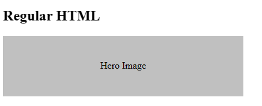

Web Components
the Eleventy Way
read.me
- Raymond Camden
- Senior Developer Evangelist at Adobe
- Enterprise Cat Demo Builder
- Blogging at raymondcamden.com
- Tweeting @raymondcamden
My Plan (v1)
- Teach you everything about web components
- Teach you how WebC is the same, different, etc
- All within 30 minutes
- Play violin at the same time
My Plan (v2)
- Quickly cover the why and how of web components
- Introduce WebC (how it's similar, how it differs)
- Show multiple cat demos
- Give some commentary
Forget the whole violin thing
Web Components - Elevator Pitch
- Introduced by Alex Russel in 2011
- Some amount of time passed........
- Now mostly supported (even if _that_ browser)
Web Components - Elevator Pitch (cont.)
- Custom elements (<cat-picture>)
- Shadow DOM (cool, but not as cool as it sounds)
- HTML Templates (ehhhh)
Web Components - Why?
- Reduce complexity
- Reuse common things
- Libraries
Example (Using)
Regular HTML
Example (Defining)
const ns = 'http://www.w3.org/2000/svg';
class PlaceHolder extends HTMLElement {
constructor() {
super();
const shadow = this.attachShadow({mode:'open'});
this.width = 250;
this.height = 250;
this.bgcolor = '#c0c0c0';
if(this.hasAttribute('width')) this.width = parseInt(this.getAttribute('width'), 10);
if(this.hasAttribute('height')) this.height = parseInt(this.getAttribute('height'), 10);
if(this.hasAttribute('bgcolor')) this.bgcolor = this.getAttribute('bgcolor');
const wrapper = document.createElementNS(ns, 'svg');
wrapper.setAttribute('width', this.width);
wrapper.setAttribute('height', this.height);
wrapper.setAttribute('viewBox', `0 0 ${this.width} ${this.height}`);
const rect = document.createElementNS(ns, 'rect');
rect.setAttribute('width', '100%');
rect.setAttribute('height', '100%');
rect.setAttribute('fill', this.bgcolor);
wrapper.appendChild(rect);
if(this.getAttribute('text')) {
const text = document.createElementNS(ns, 'text');
text.setAttribute('x', '50%');
text.setAttribute('y', '50%');
text.setAttribute('dominant-baseline', 'middle');
text.setAttribute('text-anchor', 'middle');
text.textContent = this.getAttribute('text');
wrapper.appendChild(text);
}
shadow.appendChild(wrapper);
}
}
customElements.define('place-holder', PlaceHolder);

But wait...
- MDN Docs on Web Components
- webcomponents.today (lots of links)
- 12 years of kinda outdated material - yay!
WebC
What?
- Components for Eleventy
- Lets you ship no or less JavaScript
- Lets you use them without importing
- Let's you replace existing HTML tags
- More flexible in general
How?
- Ensure you have Eleventy 2.X Beta
- Install the plugin (not part of core!)
npm install @11ty/eleventy-plugin-webc
const pluginWebc = require("@11ty/eleventy-plugin-webc");
module.exports = function(eleventyConfig) {
eleventyConfig.addPlugin(pluginWebc, {
/* options go here, if needed */
});
};
Then?
- Write a component (more on that in a sec)
- Four options to use:
- Use a new
.webctemplate that makes use of them
- Use a new
Hello World
Then?
- Write a component (more on that in a sec)
- Four options to use:
- Use a new
.webctemplate that makes use of them - Use the Render plugin
- Use a new
Hello World
{% renderTemplate "webc" %}
Then?
- Write a component (more on that in a sec)
- Four options to use:
- Use a new
.webctemplate that makes use of them - Use the Render plugin
- Pre-process with WebC (change the
htmlTemplateEngine) - Post-process HTML output (not recommended)
- Use a new
Demo Time!

WebC - Deeper
Questions
reach me at @raymondcamden